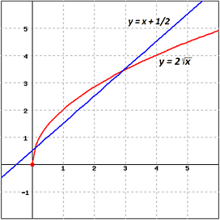
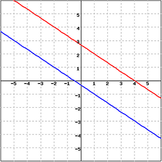

Consider the equation $y = 2\sqrt{x}$. How many $(x, y)$ pairs are there that satisfy this equation? Answer: $(0, 0)$, $(1, 2)$, $(4, 4)$, and $(9, 6)$ are all solutions; and there is an infinite number of other solutions. (And don’t forget non-integer solutions, such as $(\frac{1}{4}, 1)$!)
Now, consider the equation $y = x + \frac{1}{2}$ . How many pairs satisfy this equation? Once again, an infinite number. Most equations that relate two variables have an infinite number of solutions.
To consider these two equations “simultaneously” is to ask the question:
At first glance, it is not obvious how to approach such a question– it is not even obvious how many answers there will be.
One way to answer such a question is by graphing. Remember, the graph of $y = 2\sqrt{x}$ is the set of all points that satisfy that relationship; and the graph of $y = x + \frac{1}{2}$ is the set of all points that satisfy that relationship. So the intersection(s) of these two graphs is the set of all points that satisfy both relationships.
How can we graph these two? The second one is easy: it is a line, already in $y = mx + b$ format. The $y$-intercept is $\frac{1}{2}$ and the slope is $1$. We can graph the first equation by plotting points; or, if you happen to know what the graph of $y = \sqrt{x}$ looks like, you can stretch the graph vertically to get $y = 2\sqrt{x}$, since all the $y$-values will double. Either way, you wind up with something like this:
|  | We can see that there are two points of intersection. One occurs when $x$ is barely greater than $0$ (say, $x = 0.1$), and the other occurs at approximately $x = 3$. There will be no more points of intersection after this, because the line will rise faster than the curve. |
Graphing has three distinct advantages as a method for solving simultaneous equations.
For more exact answers, we use analytic methods. Two such methods will be discussed in this chapter: substitution and elimination.
Here is the algorithm for substitution.
Example 2B-1: Solving Simultaneous Equations by Substitution $$3x + 4y = 1$$ $$2x - y = 8$$
1. The easiest variable to solve for here is the y in the second equation. $$-y = -2x + 8$$ $$\color{red}{y = 2x - 8}$$
2. Now, we plug that into the other equation: $$3x + 4 (2x - 8) = 1$$
3. We now have an equation with only $x$ in it, so we can solve for $x$. $$3x + 8x - 32 = 1$$ $$11x = 33$$ $$x = 3$$
4. Finally, we take the equation from step 1, $\color{red}{y = 2x - 8}$, and use it to find $y$. $$y = 2 (3) - 8 = -2$$ So $(3,-2)$ is the solution. You can confirm this by plugging this point into both of the original equations, and getting true statements (or two true equations).
Why does substitution work?
We found in the first step that $y = 2x - 8$. This means that $y$ and $2x - 8$ are equal in the sense that we discussed in the first chapter on functions—they will always be the same number, in these equations—they are the same. This gives us permission to simply replace one with the other, which is what we do in the second (“substitution”) step.
Example 2B-2: Solving Simultaneous Equations by Elimination $$3x + 4y = 1$$ $$2x - y = 8$$
1 - The first question is: how do we get one of these variables to have the same coefficient in both equations? To get the $x$ coefficients to be the same, we would have to multiply the top equation by $2$ and the bottom by $3$. It is much easier with $y$; if we simply multiply the bottom equation by $4$, then the two $y$ values will both be multiplied by $4$. $$3x + 4y = 1$$ $$8x - 4y = 32$$
2 - Now we either add or subtract the two equations. In this case, we have $4y$ on top, and $-4y$ on the bottom; so if we add them, they will add to zero. (If the bottom had a $+4y$ we would have to subtract the two equations to eliminate the $y$'s.) $$3x + 4y = 1$$ $$+\underline{(8x - 4y = 32)}$$ $$11x + 0y = 33$$
3-4 - Once again, we are left with only one variable: $11x = 33.$ We can solve this equation to find that $x = 3$ and then plug back in to either of the original equations to find $y = -2$ as before.
Why does elimination work?
As you know, you are always allowed to do the same thing to both sides of an equation. If an equation is true, it will still be true if you add $4$ to both sides, multiply both sides by $6$, or take the square root of both sides.
Now—consider, in the second step above, what we did to the equation $3x + 4y = 1$. We added something to both sides of this equation. What did we add? On the left, we added $8x - 4y$; on the right, we added $32$. It seems that we have done something different to the two sides.
However, the second equation gives us a guarantee that these two quantities, $8x-4y$ and $32$, are in fact the same as each other. So by adding $8x - 4y$ to the left, and $32$ to the right, we really have done exactly the same thing to both sides of the equation $3x + 4y = 1$.
Example 2B-3: Consider the two equations: $$2x + 3y = 8$$ $$4x + 6y = -3$$ Suppose we attempt to solve these two equations by elimination. One approach is to multiply the first equation by $2$ and subtract the second equation. The result is: $$4x + 6y = 16$$ $$-(\underline{4x + 6y = -3})$$ $$0 = 19$$ Hey, what happened? $0$ does not equal $19$, no matter what $x$ is. Mathematically, we see that these two equations have no simultaneous solution. You asked the question “When will both of these equations be true?” And the math answered, “Hey, buddy, not until 0 equals $19$.” So our conclusion must be: No solution.
What happens in this situation if we had tried to solve by the method of substitution?
Example 2B-4: Again consider the equations: $$2x + 3y = 8$$ $$4x + 6y = -3$$ Let's solve the first equation for $x$: $$ \begin{align} 2x + 3y & = 8\\ 2x & = 8 - 3y\\ x & = 4 - \frac{3}{2} y \\ \end{align}$$ Substituting the expression for $x$ into the second equation: $$ \begin{align} 4(4 - \frac{3}{2} y) + 6y & = -3 & \\ 16 - 6y + 6y & = -3 & \\ 16 & = -3 & \mbox{It happened again!!!}\\ \end{align}$$
Even though the numbers are different between the two methods, our conclusion must remain the same: No solution.
Example 2B-5: Now, consider these equations: $$2x + 3y = 8$$ $$4x + 6y = 16$$ Once again, we attempt to solve the system by elimination, but the result is different. First multiply the first equation by $2$: $$ \begin{align} 2(2x + 3y & = 8) \\ 4x + 6y &= 16\\ \end{align}$$ Subtract the second from the first: $$ \begin{align} 4x + 6y & = 16 \\ -\underline{(4x + 6y} & \underline{= 16)}\\ 0 & = 0 \end{align}$$ What happened that time? $0 = 0$ no matter what $x$ is. Instead of an equation that is always false, we have an equation that is always true. Does that mean these equations work for any $x$ and $y$? Clearly not: for instance, $(1, 1)$ does not make either equation true. What this means is that the two equations are the same: Any pair that solves one will also solve the other. There are an infinite number of solutions, but not all points are solutions.
To solve the system we need to state what values are solutions. These equations are the same line and its slope-intercept form is: $$ \begin{align} 2x + 3y & = 8\\ 3y & = -2x + 8 \\ y & = -\frac{2}{3} x + \frac{8}{3} \\ \end{align}$$ Any point that is a solution to the line's equation is a solution for the system. Now, $x$ may be any value, since any value of $x$ may be substituted into the equation for a line--remember, a line's domain is all real numbers. The $y$-values are calculated by $y = -\frac{2}{3} x + \frac{8}{3}.$ So, $(-2, -\frac{2}{3}(-2) + \frac{8}{3}) = (2,4)$ is a solution as is $(1, -\frac{2}{3}(1) + \frac{8}{3}) = (1, 2).$ In conclusion, we found that there are many solutions to this system of equations, but they have to look like $(x, -\frac{2}{3} x + \frac{8}{3}).$
All of this is much easier to understand graphically! Remember that one way to solve simultaneous equations is by graphing them and looking for the intersection.
Example 2B-6: Recall Examples 2B-3 and 2B-4. We found no solution to the system $$2x + 3y = 8$$ $$4x + 6y = -3$$
|  | In this case, we see the original equations represented as two parallel lines. There is no point of intersection, so there is no simultaneous solution. |
|
In this case, we see that the original equations represented the same line, in two different forms. Any point on the line is a solution to both equations. |
GENERAL RULE FOR THE SPECIAL CASES: If you solve an equation and get a mathematical impossibility such as $0 = 13$, there is no solution. If you get a mathematical tautology such as $0 = 0$, there are an infinite number of solutions and you should find an expression for the solutions in terms of $x$. For example, $\left(x, \frac{2}{3}x+\frac{8}{3} \right)$, where the $y$ coordinate is replaced by $mx+b$, the equation for the line. Remember $mx+b$ equals $y$. When you express $y$ in terms of $x$, someone can plug in any value for the $x$ coordinate and determine the corresponding $y$ coordinate on the line.